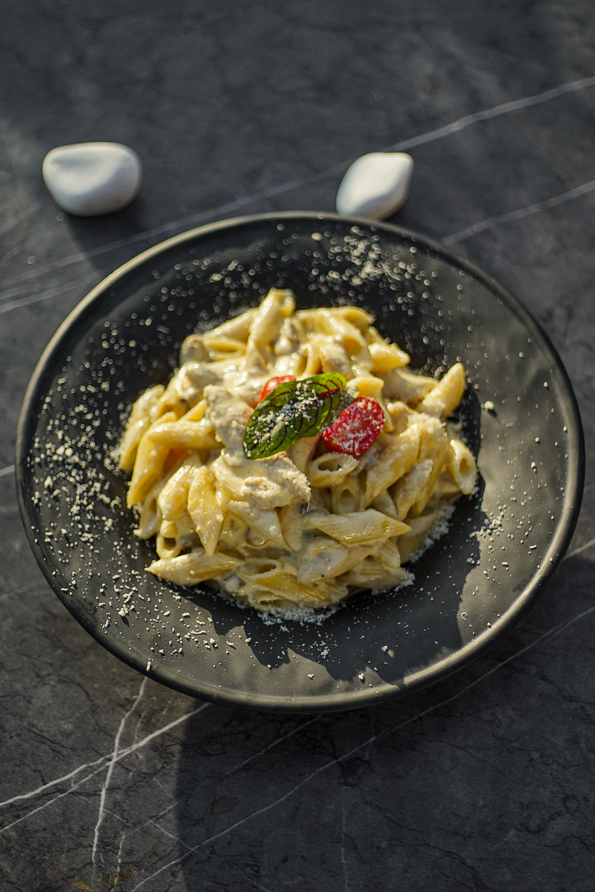

Spaghetti Carbonara

Description
Chicken Alfredo Pasta is a rich and creamy Italian-inspired dish featuring tender, seasoned chicken breast served over perfectly cooked pasta. The pasta is coated in a smooth Alfredo sauce made with butter, garlic, cream and Parmesan cheese. It's comforting, satisfying and perfect for an easy homemade dinner.
Ingredients
- 250 g fettuccine or pasta of your choice
- 2 chicken breasts
- Salt and black pepper, to taste
- 1 tsp garlic powder
- 1 tsp paprika (optional)
- 2 tbsp olive oil
- 2 tbsp butter
- 3 cloves garlic, minced
- 1 1/2 cups fresh cream
- 1 cup grated Parmesan cheese
- 1/4 cup pasta water (as needed)
- Fresh parsley, chopped (for garnish)
Steps
-
Bring a pot of salted water to a boil. Add the pasta and cook according to the package instructions until al dente. Reserve about ¼ cup of pasta water before draining.
-
Season the chicken breasts with salt, black pepper, garlic powder and paprika. Heat olive oil in a pan over medium-high heat. Cook the chicken for approximately 4–5 minutes per side, depending on thickness, until golden and cooked through. Remove from the pan, allow to rest briefly, then slice.
-
In the same pan, melt the butter over medium heat. Add the minced garlic and cook for about 1 minute. Pour in the fresh cream and bring to a gentle simmer. Stir in the Parmesan cheese until melted and the sauce is smooth and creamy.
-
Add the cooked pasta to the Alfredo sauce and toss until coated. If the sauce is too thick, add a little reserved pasta water to loosen it.
-
Place the pasta on plates, top with sliced chicken and finish with extra Parmesan cheese and freshly chopped parsley.
Home